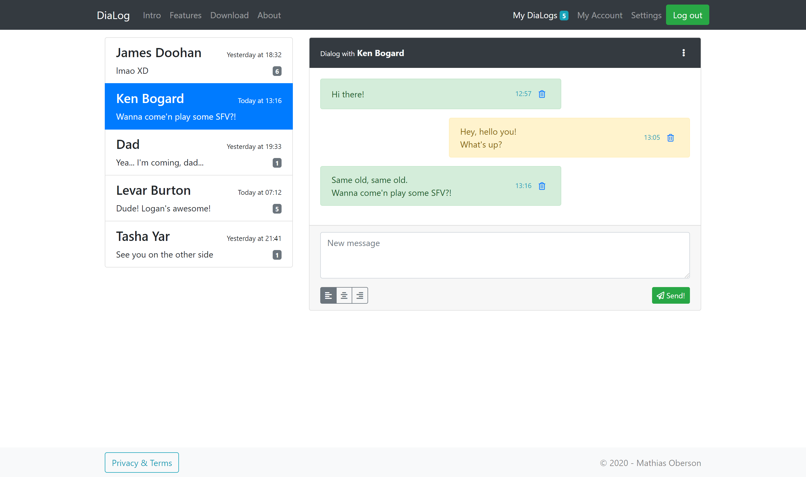

class: center, middle # jQuery - DOM Manipulation --- ## Summary .breadcrumbs[<a href="#1">jQuery - DOM Manipulation</a>] Learn how to use the jQuery library to manipulate the DOM of a web page and creating interactivity. This material is part of the [Advanced Front-end Development](https://github.com/MediaComem/comem-masrad-dfa) for the [Master of Advances Studies in Rapid Application Development](https://www.he-arc.ch/ingenierie/mas-rad-cas-dar). **You will need** - [Google Chrome][chrome] (recommended, any browser with developer tools will do) - [Visual Studio Code][vscode] (recommended, although any editor could do) - [Live-Server][ls] (should already be installed) **Recommended reading** - [JavaScript][js] - [Bootstrap][bs] --- ## Setup .breadcrumbs[<a href="#1">jQuery - DOM Manipulation</a>] 1. Create a new folder in your `dfa-course` folder. We'll call it `jquery-dom` 1. Save [this `index.html` file][ex-file] in the new folder. > Note that this example file includes Bootstrap through a CDN. Feel free to change that to a local link if you'd prefer ([see here][local-bs]). 1. Start `live-server` and you should see the following page: <p class="center"></p> --- ## Include jQuery .breadcrumbs[<a href="#1">jQuery - DOM Manipulation</a>] To add jQuery in your project, you can include it via a CDN link, in your `index.html` file: ```html <body> ... <script src="https://code.jquery.com/jquery-3.6.4.min.js" integrity="sha256-oP6HI9z1XaZNBrJURtCoUT5SUnxFr8s3BzRl+cbzUq8=" crossorigin="anonymous"></script> </body> ``` You can also [download the complete file][dl-jquery], and save the file in a `js` directory in your project directory. Then, include the file in your `index.html`: ```html <body> ... <script type="text/javascript" src="js/jquery-3.1.1.min.js"></script> </body> ``` > Wait... am I not supposed to put my `<script>` tags in the `<head>`? > > What are they doing right before the closing `</body>` tag? --- ### Script inclusions .breadcrumbs[<a href="#1">jQuery - DOM Manipulation</a> > <a href="#4">Include jQuery</a>] It's considered [a good practice][js-in-body] to include JS scripts **at the end of your HTML page**. When your browser loads the JS, it doesn't just load the file. It also **parses** it. Parsing the JS files **pauses the load of all other resources**, effectively blocking everythig until the JS has been completely parsed. > This can result in **slow loading pages**, especially when you have multiple or big scripts. Plus, loading JS files before the DOM is complete forces you to do all your intial DOM access in a `window.onlad = function {}` callback. > With `<script>` tags at the and of the `<body>`, the DOM is completely loaded **before** your script, and your code can safely access it. --- ### Add custom script .breadcrumbs[<a href="#1">jQuery - DOM Manipulation</a> > <a href="#4">Include jQuery</a>] We will write our JS code in a custom script file. In your `jquery-dom` folder, create a new file `script.js` and include it at the bottom of your `index.html` page: ```html <body> ... <script type="text/javascript" src="script.js"></script> </body> ``` > Be extra-sure to include your custom `script.js` file **after** the inclusion of the jQuery file. --- ### Test everything .breadcrumbs[<a href="#1">jQuery - DOM Manipulation</a> > <a href="#4">Include jQuery</a>] Add the following line in your `script.js` file, and save it: ```js console.log($("body").jquery); ``` Access your browser's console and you should see the following lines: ```bash 3.6.4 Live reload enabled. ``` > If it's the case, jQuery and your custom script are both correctly include in your project. > You can now empty your `script.js` file --- ## Learn by example .breadcrumbs[<a href="#1">jQuery - DOM Manipulation</a>] For the rest of this course, we are going to discover how to do things with jQuery by implementing features on the example template. These features are: - Select another discussion in the left list, and reset the unread indicator - Change the alignment of the "New message" area, using the three buttons - Add a new message to the discussion when clicking on the "Send" button - Remove messages from the discussion when clicking on the trash button --- class: center, middle, image-header ## What is jQuery .breadcrumbs[<a href="#1">jQuery - DOM Manipulation</a>] <p class='center'><img src='images/jquery-logo.png' width='30%' /></p> > jQuery is a JavaScript library created in 2006 by John Resig, and originally designed to ease the creation of client-side JS script, especially regarding DOM manipulation. > **This subject is based on the `3.4.1` version of jQuery.** --- class: center, middle ## jQuery documentation .breadcrumbs[<a href="#1">jQuery - DOM Manipulation</a>] Everything that is presented in this subject can also be found in **the jQuery documentation**, along with lot of **examples** and **information**. We highly recommend that you check it out. [jQuery Documentation][jq-doc] --- ## The `$` identifier .breadcrumbs[<a href="#1">jQuery - DOM Manipulation</a>] The complete jQuery library is accessible in your JS code through the use of a global variable named `$`. Note that other libraries could also use a variable named `$` as their main entrypoint. > That could cause some conflict between jQuery and those librairies. Although it won't be the case in this subject, you could instead use the global `jQuery` variable to access the jQuery API in your code. To be sure to remove all possible conflicts, you can use the special `.noConflict()` jQuery method at the top of your JS file: ```js $.noConflict(); // Code that uses other library's $ can follow here. // But use the jQuery variable to access jQuery's method. ``` --- ## Selecting things .breadcrumbs[<a href="#1">jQuery - DOM Manipulation</a>] Being a library designed to easily handle DOM manipulation, jQuery allows you to... easily select DOM elements. To do so, use the `$(...)` function, passing it a **selector** as its first parameter. This selector uses **the same syntax as the [CSS Selectors][css-select] syntax**. | Selector | CSS example | jQuery | Result | | :------- | :---------- | :--------------- | :----------------------------------------- | | Element | `p` | `$("p")` | **All** `<p>` elements in the page | | Id | `#username` | `$("#username")` | **Unique** elements with the `username` id | | Class | `.row` | `$(".row")` | **All** elements with a `row` class | Two things are worth mentionning about this `$(...)` function: 1. It never returns **DOM element** _per-se_ but wraps them in **a jQuery object** that adds many features to them. 1. Even when using an Id selector, which should select one element, the function returns **an `array` of jQuery objects**. --- ### Good selecting practice .breadcrumbs[<a href="#1">jQuery - DOM Manipulation</a> > <a href="#12">Selecting things</a>] The syntax for selecting elements in jQuery being [very vast][css-select], you can easily write selectors that aren't optimals, performace-wise. > Traversing the DOM is a **costly operation**. Your jQuery selectors (and your CSS ones as well) should try to be **as to-the-point as possible**. There's many good practice regarding jQuery selectors. We are only going to see a few of them. <hr> > Note that the following example contains some jQuery method we haven't yet seen. > > **Don't mind them now, we will explicit those methods later on this subject.** --- #### Storing jQuery object .breadcrumbs[<a href="#1">jQuery - DOM Manipulation</a> > <a href="#12">Selecting things</a> > <a href="#13">Good selecting practice</a>] When you know or discover that your are going to use the same jQuery selector **several time**, you should cache its result **in a variable**, for future reference. **Bad!** ```js $("article > p:first-child").addClass("catch-phrase"); $("article > p:first-child").text("This is a very pertinent article"); $("article > p:first-child").append("<span>CLICK ME!</span>"); ``` **Way better!** ```js const `$firstSentences` = $("article > p:first-child"); `$firstSentences`.addClass("catch-phrase"); `$firstSentences`.text("This is a very pertinent article"); `$firstSentences`.append("<span>CLICK ME!</span>"); ``` > **Preceding** a variable name with **the `$` character** is some kind of a convention, when working with jQuery, to indicate that **this variable contains jQuery object(s)**. --- #### Use `id` selectors .breadcrumbs[<a href="#1">jQuery - DOM Manipulation</a> > <a href="#12">Selecting things</a> > <a href="#13">Good selecting practice</a>] HTML `id` attribute allows you to define **unique identifier** in an HTML page. Thanks to this uniqueness, element with `id` attributes are **extremly fast to retrieve** in the DOM, even with older browsers. > As much as possible, you should add `id` attributes to HTML elements that you'll select. ```html <div class="panel-body"> <p><!-- content --></p> <p id="the-one"><!-- content --></p> <p><!-- content --></p> </div> ``` This... ```js $("div.panel-body p:nth-of-type(2)"); ``` ...will be way **slower** than this. ```js $("#the-one"); ``` --- #### Don't overselect things .breadcrumbs[<a href="#1">jQuery - DOM Manipulation</a> > <a href="#12">Selecting things</a> > <a href="#13">Good selecting practice</a>] If you can't define `id` attributes in your HTML template, you'll need to use more complete selectors. When doing so, you might be tempted to be **as exhaustive as possible**, in order to be sure you'll get the right element(s). Like this for example: ```js $("html body main.container div.list-group a.list-group-item h4"); ``` > This is completely **unnecessary** and a **waste of resources**. You want to be precise with your selector to avoid getting things you don't want. But being over-precise is **as bad** as being too vague. We could simplify the precedent example like this: ```js $("a.list-group-item h4"); ``` > Knowing your HTML structure is **mandatory** in order to write good jQuery selectors. --- #### Using `class` selector .breadcrumbs[<a href="#1">jQuery - DOM Manipulation</a> > <a href="#12">Selecting things</a> > <a href="#13">Good selecting practice</a>] CSS classes being shared among elements, it's a great way to quickly select all related elements. ```js // Will select all items from list-group lists. $(".list-group-item"); ``` But there's a drawback. With `class` selector, jQuery will parse **all the DOM** and test **every single node** to see if it has the given class (or classes). This is possibly very inefficient. Thus, you should try to be **as precise as possible** when using `class` selector, by qualifying it with a tag name, for example. In our example, we know that the `.list-group-item` should only be applied to `<li>` or `<a>` element. So: ```js // Will select only <li> and <a> that have the class $("li.list-group-item, a.list-group-item"); ``` --- #### Selecting order .breadcrumbs[<a href="#1">jQuery - DOM Manipulation</a> > <a href="#12">Selecting things</a> > <a href="#13">Good selecting practice</a>] When jQuery encounters a selector like `$("a.list-group-item h4")`, how do you think it's going to execute it ? > You might think that jQuery will fetch all the `a.list-group-item` first, then fetch all `h4` inside them. This is **not** the case. In fact, it's the **complete opposite**. To begin with, jQuery will fetch all `<h4>` in the page, and store them in an `array`. Then, it will examine each of these `<h4>`, and reject the ones that don't have an `a.list-group-item` as parent. > If you have many `<h4>` in your page or a far-too-precise selector, jQuery will take unnecessary time to process the selector. To solve this problem, you have two options: - Use the `.find(...)` method on the parent object. - Narrow the context by using the second parameter of the `$(...)` function. --- ##### Try to `.find()` me .breadcrumbs[<a href="#1">jQuery - DOM Manipulation</a> > <a href="#12">Selecting things</a> > <a href="#13">Good selecting practice</a> > <a href="#18">Selecting order</a>] The `.find(...)` method allows you to search for **elements in the DOM**, but limited to the context of the jQuery object on which you called the method. If we use the previous example again (the `$("a.list-group-item h4")` case), we would use the method like this: ```js $("a.list-group-item").find("h4"); ``` > We first fetch the `a.list-group-item`, then we search for `h4` elements **inside** the retrieved `a.list-group-item` elements. --- ##### Refine the use of `$(...)` .breadcrumbs[<a href="#1">jQuery - DOM Manipulation</a> > <a href="#12">Selecting things</a> > <a href="#13">Good selecting practice</a> > <a href="#18">Selecting order</a>] We said before that `$(...)` is the function to use to **retrieve DOM elements**. Its first parameter is **the selector** for those elements. But the function also have a second (optional) parameter, which is the **context in which the search is conducted**. By default, the context is the complete HTML page, but you can pass it **any object representing a subset of the DOM**. For the previous example, we could write our selector like this: ```js // First, we retrieve all the list-group items const $listElements = $("a.list-group-item"); // Then we search for <h4> element, but only in the subset of the Dom // contained in the previously retrieved elements $("h4", $listElements); ``` In a more compressed style, it would resemble this: ```js $("h4", $("a.list-group-item")); ``` --- class: center, middle ## Feature : _"Select discussion item"_ .breadcrumbs[<a href="#1">jQuery - DOM Manipulation</a>] --- class: middle ### Template update N°1 .breadcrumbs[<a href="#1">jQuery - DOM Manipulation</a> > <a href="#21">Feature : _"Select discussion item"_</a>] For **better UI behavior**, we need to tell our browser to show the **click pointer icon** when passing over our discussion list items. Add a new `<style>` tag at the end of your `<head>` tag with the following styles: ```html <head> ... * <style> * .list-group-item { * cursor: pointer; * } * </style> </head> ``` --- ### Events .breadcrumbs[<a href="#1">jQuery - DOM Manipulation</a> > <a href="#21">Feature : _"Select discussion item"_</a>] Most of the functionnalities we'll implement will rely on things being **clicked**. > jQuery can handle more events than just click, [see here][jq-events]. Use the `.on(...)` method to register a click event handler on an element. > The `.on(...)` method needs the name of the event and a callback function as its argument, that will be called with **one argument**: the **fired event** In order to select another discussion, we need to listen to `click` events on the **list elements**. Add this code in your `script.js` file: ```js $("a.list-group-item").on("click", event => console.log(event)); ``` Now, go to your page, open your console and try to **click** on one of the list item. > You should see the object representing the event. --- #### Get the event target? .breadcrumbs[<a href="#1">jQuery - DOM Manipulation</a> > <a href="#21">Feature : _"Select discussion item"_</a> > <a href="#23">Events</a>] When writing event callback functions you might want to retrieve **the DOM element that triggered the event**. You can do that with the property `currentTarget` of the event object: ```js $("a.list-group-item").on("click", event => console.log(`event.currentTarget`)); ``` Since we are using jQuery, we'd prefer retrieving a **jQuery object** representing this DOM element. Do that by passing `event.currentTarget` to the `$(...)` function: ```js $("a.list-group-item").on("click", event => console.log(`$(event.currentTarget)`)); ``` --- ### Add a CSS class .breadcrumbs[<a href="#1">jQuery - DOM Manipulation</a> > <a href="#21">Feature : _"Select discussion item"_</a>] On the page, there is one list item that has a different style. This is **the currently selected item**, and the effect is achieved using the `.active` class from the Bootstrap framework. When another list item will be clicked we want to **switch the active state** from the previous list item to the one being activated. This means adding the `.active` CSS class **to the currently clicked element**. Use the `.addClass(...)` method to do that, and pass it a `string` with the **name of the classes** to be added, separated by a **space**. > Be sure to type the name of the class **without the starting dot** ; you're writing a class name, not a CSS selector ```js $("a.list-group-item").on("click", event => `$(event.currentTarget).addClass("active")`); ``` > Go on your page, and click on your list items. > The class is correctly added. Next step is to **remove this class** from the previsouly active element. --- ### Remove a CSS class .breadcrumbs[<a href="#1">jQuery - DOM Manipulation</a> > <a href="#21">Feature : _"Select discussion item"_</a>] To remove a CSS class from an element, simply use the `.removeClass(...)` method. > Pass it a `string` argument with the names of the classes to be removed, separated by a space. Now, we want to remove the active state from the previously selected list element. This element is a `a.list-group-item` with the `.active` class. ```js $("a.list-group-item").on("click", event => { // Remove the 'active' class from the previously selected list item * $("a.list-group-item.active").removeClass("active"); // Add the 'active' class to the clicked list item $(event.currentTarget).addClass("active"); }); ``` > Note how we append the `.active` class to our selector. Trying to remove a CSS class from an element that **didn't have it** in the first time will **not raise any error**, fortunately. --- ### Change the content .breadcrumbs[<a href="#1">jQuery - DOM Manipulation</a> > <a href="#21">Feature : _"Select discussion item"_</a>] Now that we can change the selected discussion list item, we want to **remove the notification** about unread messages, that is the badge in the item. For that we will **change the content** of the `span.badge` inside the list item. Use the `.text(...)` method to do so, and pass it a `string` that represents the **new content**. > Calling the method with **no argument** returns the **current** content. In our case, since we want to remove the content of the element, we'll use an empty `string` (`""`): ```js $("a.list-group-item").on("click", event => { const $target = $(event.currentTarget); /* Add this after previous code */ // Remove the unread notification * $("span.badge", $target).text(""); }); ``` > Note that we used the target of the event as context when searching for the `span.badge` element. --- ### Complete code .breadcrumbs[<a href="#1">jQuery - DOM Manipulation</a> > <a href="#21">Feature : _"Select discussion item"_</a>] Here's the complete code for this feature: > For better readability and structure, we've splitted the **event handler declaration** from the **function implementation**. ```js $("a.list-group-item").on("click", switchListItem); *function switchListItem(event) { const $target = $(event.currentTarget); // Change the active state to the clicked item $("a.list-group-item.active").removeClass("active"); $target.addClass('active'); // Clear the unread notification for the clicked item $('span.badge', $target).text(""); } ``` > Note that we passed the `switchListItem` function as parameter to the `.on(...)` method **without parenthesis**. > We dont' want to **execute the function**, we just want to pass its **reference**. --- class: center, middle ## Feature : _"Change message alignment"_ .breadcrumbs[<a href="#1">jQuery - DOM Manipulation</a>] --- class: middle ### Template update N°2 .breadcrumbs[<a href="#1">jQuery - DOM Manipulation</a> > <a href="#29">Feature : _"Change message alignment"_</a>] For the next feature, we will need to **add some `id`** in our `index.html` page. At the **line 174**, add this `id` to the `<textarea>` element: ```html <textarea id="`message`" [...] ></textarea> ``` At the **line 179**, add this `id` to the `<div>` element: ```html <div class="btn-group btn-group-sm" id="`align-btns`"></div> ``` --- ### Attach the events .breadcrumbs[<a href="#1">jQuery - DOM Manipulation</a> > <a href="#29">Feature : _"Change message alignment"_</a>] Our three alignment buttons are all children of the same element, which is the `div#align-btns`. We can thus use this element in our selector to access the buttons: ```js $("#align-btns button")... ``` > We have seen that this kind of notation can be optimized. > > Let's use the second paramter of `$(...)` to retrieve the buttons, and then attach them the event: ```js $("button", $("#align-btns")).on("click", event => console.log(event.currentTarget)); ``` > **"What is this strange behavior?"** you might ask, **"The page is reloaded every time a button is clicked. Why?"** --- #### Buttons in a form .breadcrumbs[<a href="#1">jQuery - DOM Manipulation</a> > <a href="#29">Feature : _"Change message alignment"_</a> > <a href="#31">Attach the events</a>] If you look closely at the HTML structure in which the `button`s are placed, you'll see that they are placed **inside a form**: ```html *<form> <!-- textarea element --> <div class="btn-group btn-group-sm" id="align-btns"> <button class="btn btn-outline-secondary active">...</button> <button class="btn btn-outline-secondary">...</button> <button class="btn btn-outline-secondary">...</button> </div> <!-- send button --> *</form> ``` > By default, buttons inside a `<form>` and without a `type` attribute are considered `submit` buttons. > > Clicking on a submit `<button>` inside a `<form>` will trigger the submition of said `<form>`. > > Since our `form` doesn't have an `action` attribute, its submition will reload the current page. > **That's a default behavior that we don't want.** --- ### Prevent default behavior with HTML .breadcrumbs[<a href="#1">jQuery - DOM Manipulation</a> > <a href="#29">Feature : _"Change message alignment"_</a>] If you have some `<button>`s inside a `<form>` that should not submit it when clicked, you can simple define their `type`: ```html <button type="button">...</button> ``` This way, the browser will know that this particular button is **NOT** a button that should submit the form. > Go ahead, and add this attribute to the alignment buttons, but keep the Ssend button without type. --- ### Change button state .breadcrumbs[<a href="#1">jQuery - DOM Manipulation</a> > <a href="#29">Feature : _"Change message alignment"_</a>] The _align left_ button is constantly in an active state. This effect is achieved by using the `.active` class from the Bootstrap framework. In the same fashion as the state of the discussion list item, we will want to switch the state when a button is pressed. This is the code that achieve that: ```js const $alignButtons = $("#align-btns"); $("button", $alignButtons).on("click", event => { const $target = $(event.currentTarget); // Change the active state when a button is clicked * $("button.active", $alignButtons).removeClass("active"); * $target.addClass("active"); }); ``` --- ### Planning the logic .breadcrumbs[<a href="#1">jQuery - DOM Manipulation</a> > <a href="#29">Feature : _"Change message alignment"_</a>] Now that our buttons behave as expected, let's make them concretly **change the text alignment** in the "New message" area. Bootstrap has **three utility classes** that helps you manage text-alignment: - `.text-start` - `.text-center` - `.text-end` So, all we need to do, in our callback function, is: 1. Detect **which button** has been clicked 2. **Remove any precedent alignment class** from the `#message` element 3. **Add the correct alignment class** to the `#message` element --- ### Detect the button .breadcrumbs[<a href="#1">jQuery - DOM Manipulation</a> > <a href="#29">Feature : _"Change message alignment"_</a>] To detect which button has been click we will add an `id` to each button. ```html <div class="btn-group btn-group-sm" id="align-btns"> <button class="btn btn-outline-secondary active" `id="align-start-btn"`> <i class="fas fa-align-left"></i> </button> <button class="btn btn-outline-secondary" `id="align-center-btn"`> <i class="fas fa-align-center"></i> </button> <button class="btn btn-outline-secondary" `id="align-end-btn"`> <i class="fas fa-align-right"></i> </button> </div> ``` --- ### Present your ID... .breadcrumbs[<a href="#1">jQuery - DOM Manipulation</a> > <a href="#29">Feature : _"Change message alignment"_</a>] To check the value of an element attribute with jQuery, call the `attr(...)` method with the name of the attribute. ```js console.log($("li#active").attr("id")); // Will print "active" ``` Let's check what is the `id` of the clicked button : ```js const $alignButtons = $("#align-btns"); $("button", $alignButtons).on("click", event => { const $target = $(event.currentTarget); // Change the active state when a button is clicked $("button.active", $alignButtons).removeClass("active"); $target.addClass("active"); // Check what button has been clicked const btnId = $target.attr("id"); if (btnId === "align-start-btn") { // We clicked the align left button ! } }); ``` --- #### if ... else if ... else .breadcrumbs[<a href="#1">jQuery - DOM Manipulation</a> > <a href="#29">Feature : _"Change message alignment"_</a> > <a href="#37">Present your ID...</a>] Using a `if ... else if ... else` structure, we can complete our test: ```js const $alignButtons = $("#align-btns"); $("button", $alignButtons).on("click", event => { const $target = $(event.currentTarget); // Change the active state when a button is clicked $("button.active", $alignButtons).removeClass("active"); $target.addClass("active"); // Check what button has been clicked const btnId = $target.attr("id"); if (btnId === "align-start-btn") { console.log("Align start button"); } else if (btnId === "align-center-btn") { console.log("Align center button"); } else if (btnId === "align-end-btn") { console.log("Align end button"); } }); ``` > Go on and try that. --- ### Finally... change the alignment! .breadcrumbs[<a href="#1">jQuery - DOM Manipulation</a> > <a href="#29">Feature : _"Change message alignment"_</a>] **When the** _align-start_ **button has been clicked:** ```js if (btnId === "align-start-btn") { * $("#message").removeClass("text-end text-center").addClass("text-start"); } ``` **When the** _align-center_ **button has been clicked:** ```js else if (btnId === "align-center-btn") { * $("#message").removeClass("text-end text-start").addClass("text-center"); } ``` **When the** _align-right_ **button has been clicked:** ```js else if (btnId === "align-end-btn") { * $("#message").removeClass("text-start text-center").addClass("text-end"); } ``` --- ### Complete code .breadcrumbs[<a href="#1">jQuery - DOM Manipulation</a> > <a href="#29">Feature : _"Change message alignment"_</a>] Here's the complete code for this feature: > For better readability and structure, we've splitted the **event handler declaration** from the **function implementation**. ```js const $alignButtons = $("#align-btns"); $("button", $alignButtons).on("click", changeAlignment); function changeAlignment(event) { const $target = $(event.currentTarget); // Change the active state when a button is clicked $("button.active", $alignButtons).removeClass("active"); $target.addClass("active"); // Check what button has been clicked const btnId = $target.attr("id"); if (btnId === "align-left-btn") { $("#message").removeClass("text-end text-center").addClass("text-start") } else if (btnId === "align-center-btn") { $("#message").removeClass("text-end text-start").addClass("text-center"); } else if (btnId === "align-right-btn") { $("#message").removeClass("text-start text-center").addClass("text-end"); } } ``` --- class: center, middle ## Feature : _"Add new message"_ .breadcrumbs[<a href="#1">jQuery - DOM Manipulation</a>] --- class: middle ### Template update N°3 .breadcrumbs[<a href="#1">jQuery - DOM Manipulation</a> > <a href="#41">Feature : _"Add new message"_</a>] For the next feature, we will need to **add some `id`** in our `index.html` page. At the **line 122**, add this `id` to the `<div>` element: ```html <div class="card-body" id="`dialog`"></div> ``` At the **line 195**, add this `id` to the `<button>` element: ```html <button class="btn btn-success btn-sm" id="`send-btn`"></button> ``` --- ### The basics .breadcrumbs[<a href="#1">jQuery - DOM Manipulation</a> > <a href="#41">Feature : _"Add new message"_</a>] Now... we'll have to..: 1. Get the value inside `#message` 1. _No value_ ? 1. Notify the user 1. Reject the creation 1. _Value_ ? 1. Get the alignment for the new message 1. Create the new message DOM structure 1. Append the new message to the discussion 1. Reset the textearea (error and content) --- ### Get the value inside `#message` .breadcrumbs[<a href="#1">jQuery - DOM Manipulation</a> > <a href="#41">Feature : _"Add new message"_</a>] To get the value of a form `<input>` or `<textarea>`, you can use the `val()` method in one of those elements: ```js // Will return "" if the textearea is empty $("#message").val(); ``` But since we will refer to the `#message` element **several time** in our code, we might as well **cache its reference** in a variable: ```js const $message = $("#message"); ``` Now, we can get the value: ```js const $message = $("#message"); $("#send-btn").on("click", () => { const msgValue = $message.val(); console.log(msgValue); }); ``` > But, wait ! The page is reloading again on each click ! --- ### Prevent default behavior with JS .breadcrumbs[<a href="#1">jQuery - DOM Manipulation</a> > <a href="#41">Feature : _"Add new message"_</a>] In this case, we don't want to add a `type="button"` to the Send button, since it is a proper submit button. But we don't want the page to reload still... Remember that the **callback function** called when an event is triggered has one parameter, which is **the triggered event object** ? This event object will **trigger the default behavior** attached to it **after** our code is executed, **unless we say it otherwise**. The `.preventDefault()` method of the event object is rightly there for this purpose. Let's call this method at the last line of our callback function: ```js $("#send-btn").on("click", `event` => { const msgValue = $message.val(); console.log(msgValue); * event.preventDefault(); }); ``` > Clicking on the button will now no longer reload the page. --- ### Validation phase .breadcrumbs[<a href="#1">jQuery - DOM Manipulation</a> > <a href="#41">Feature : _"Add new message"_</a>] The first thing we need to do, before actually going on with the message insertion, is **some validation**. In this case, we want to **reject** the creation of the new message if there is no new message to create, i.e. when the "New message" text-area is **empty**. Let's prepare the logic structure: ```js $("#send-btn").on("click", event => { const msgValue = $message.val(); * if (msgValue === "") { // No message -> Error handling * } else { // There's a message, let's go and create it. } event.preventDefault(); }); ``` --- #### Error! Error! Err... .breadcrumbs[<a href="#1">jQuery - DOM Manipulation</a> > <a href="#41">Feature : _"Add new message"_</a> > <a href="#46">Validation phase</a>] Now, if our new message is **empty**, we want to **notify the user** and **stop** the new message insertion. There's **many ways** to notify the user when an error occurs in a form. As a matter of fact, Bootstrap provides you with some classes for this, that you can apply to **[many form elements][bs-validation]**: - `.is-invalid` - `.is-valid` The one we'll use is `.is-invalid`: ```js $("#send-btn").on("click", event => { /* Preceding code */ if (msgValue === "") { * $message.addClass("is-invalid"); } /* Following code */ }); ``` --- ### What's your alignment? .breadcrumbs[<a href="#1">jQuery - DOM Manipulation</a> > <a href="#41">Feature : _"Add new message"_</a>] When the message value **contains something**, we need to retrieve the **correct alignment class** of the textarea to apply to the future new message in the discussion. Let's create a new **function** that will take **one argument**, a jQuery object of the textarea, and returns **the name of the correct class**. > We will use this returned value when creating the new message DOM structure. ```js // Add this anywhere in your script file. function getTextareaAlignment($textarea) { if ($textarea.hasClass("text-start")) { return "text-class"; } else if ($textarea.hasClass("text-center")) { return "text-center"; } else { return "text-end"; } } ``` > The last `else` covers both the case of the textarea having no alignment class or the `text-end` class. --- #### Use the function .breadcrumbs[<a href="#1">jQuery - DOM Manipulation</a> > <a href="#41">Feature : _"Add new message"_</a> > <a href="#48">What's your alignment?</a>] Now, we can use our freshly created function to actually retrieve the desired alignment. ```js $("#send-btn").on("click", event => { const msgValue = $message.val(); if (msgValue === "") { $message.addClass('is-invalid'); } else { * const alignment = getTextareaAlignment($message); // Next operations } event.preventDefault(); }); ``` --- ### Create the HTML structure .breadcrumbs[<a href="#1">jQuery - DOM Manipulation</a> > <a href="#41">Feature : _"Add new message"_</a>] We now have to create all the HTML structure necessary to add a new message to the dialog card. Since we are using Bootstrap, here is the complete structure we'll have to create (its exactly the one used for the messages already in the page): ```html <div class="col-8 offset-4"> <div class="alert alert-warning"> <div class="d-flex align-items-center"> * <div class="msg-content flex-grow-1 mr-2"> <!-- Content goes here --> * </div> <div class="d-flex align-items-center"> <small class="text-primary"><!-- Time goes here --></small> <button class="btn btn-link btn-sm"> <i class="far fa-trash-alt"></i> </button> </div> </div> </div> </div> ``` > The `div.msg-content` will help use insert the message in this tempalte later. --- #### The `$(...)` function, again .breadcrumbs[<a href="#1">jQuery - DOM Manipulation</a> > <a href="#41">Feature : _"Add new message"_</a> > <a href="#50">Create the HTML structure</a>] With jQuery, you can create HTML elements using the `$(...)` function. If you pass a `string` as argument and this `string` looks like HTML, you'll get a jQuery object containing the corresponding node structure. ```js // Will create a new <p> const $html = $("<p>"); ``` You can even pass more complex HTML string to the function: ```js // Will create a new <p> and give it some content const $html = $("<p>This is a new paragraph with content</p>"); ``` So... technically... we could create the new message by doing this: ```js const $html = $('<div class="col-8 offset-4"><div class="alert alert-warning"><div class="d-flex align-items-center"><div class="msg-content flex-grow-1 mr-2"><!-- Content goes here --></div><div class="d-flex align-items-center"><small class="text-primary"><!-- Time goes here --></small><button class="btn btn-link btn-sm"><i class="far fa-trash-alt"></i></button></div></div></div></div>'); ``` > This is obviously **not** a good solution: > > - Extremly long string > - Unreadable and unmaintainable > - Strong coupling between template and logic --- #### The `<template>` tag .breadcrumbs[<a href="#1">jQuery - DOM Manipulation</a> > <a href="#41">Feature : _"Add new message"_</a> > <a href="#50">Create the HTML structure</a>] Ideally, we would like to write our template **in our `.html` file**, then retrieve and manipulate it with jQuery. Thankfully, there's a special tag for that in HTML: [the `<template>` tag][template]. > Any content in a `<template>` tag won't be displayed on screen or read by screen-readers, but can be accessed and used in JS scrpts. ```html <template> <!-- Content goes here --> </template> ``` You can place those templates anywhere on your page, but it's best to regroup them for example at the end of your `<body>` tag (but before the `<script>` tags). > around the **line 213**, in our example We can give it an `id` for future reference, and copy our HTML inside: ```html <template `id="new-message"`> <!-- Content goes here --> </template> ``` --- #### Recovering the template .breadcrumbs[<a href="#1">jQuery - DOM Manipulation</a> > <a href="#41">Feature : _"Add new message"_</a> > <a href="#50">Create the HTML structure</a>] To retrieve a template as a jQuery object, we need to do two operations. First get the content of the `<template>` tag: ```js const template = $("#new-message").html(); ``` > This will return the HTML structure as a `string`. Then generate a new DOM structure based on this content: ```js const $msgTemplate = $(template); ``` > `$msgTemplate` now contains a jQuery object for the desired DOM. We can manipulate this DOM, and append it to our page. > Note that you could also define the template in its own file (without the `<template>` tag of course), then retrieve its content with an [AJAX request][ajax] and create a jQuery object with it. --- ### Code checkpoint .breadcrumbs[<a href="#1">jQuery - DOM Manipulation</a> > <a href="#41">Feature : _"Add new message"_</a>] With the addition of these lines, our JS code for the new feature should be: ```js const $message = $("#message"); $("#send-btn").on("click", event => { const msgValue = $message.val(); if (msgValue === "") { $message.addClass('is-invalid'); } else { const alignment = getTextareaAlignment($message); const templateHtml = $("#new-message").html(); const newMessageTemplate = $(templateHtml); } event.preventDefault(); }); function getTextareaAlignment($textarea) { if ($textarea.hasClass("text-start")) { return "text-class"; } else if ($textarea.hasClass("text-center")) { return "text-center"; } else { return "text-end"; } } ``` --- ### Fill in the template .breadcrumbs[<a href="#1">jQuery - DOM Manipulation</a> > <a href="#41">Feature : _"Add new message"_</a>] Next step is to **insert the values** for this new message. We have two values to add: - The new message content - The time at which the message has been sent Adding the new message is simple ; we need to **retrieve the `div.msg-content`** in the template node tree, and **insert the content of the `msgValue` variable**. ```js $("#send-btn").on("click", event => { const msgValue = $message.val(); if (msgValue === "") { $message.addClass('is-invalid'); } else { const alignment = getTextareaAlignment($message); const templateHtml = $("#new-message").html(); const $newMessageTemplate = $(templateHtml); * $("div.msg-content", $newMessageTemplate).text(msgValue); } event.preventDefault(); }); ``` --- ### Getting the date .breadcrumbs[<a href="#1">jQuery - DOM Manipulation</a> > <a href="#41">Feature : _"Add new message"_</a>] To get the message date, let's create a **function** that returns just that. We will use the JS Date feature for that. - The `Date()` function creates a new `Date` object representing the current date - The `toLocalTimeStrin(...)` method of a `Date` object allows you to return a localized string representation of said date. You can pass an option object to change how the time is displayed. > In our case, we will display the date in Swiss French format (with the `fr-CH` locale), and two digits for hours and minutes. Using all that together: ```js function getCurrentTime() { const date = new Date(); return date.toLocaleTimeString("fr-CH", { hour: "2-digit", minute: "2-digit" }); } ``` --- #### Add the date .breadcrumbs[<a href="#1">jQuery - DOM Manipulation</a> > <a href="#41">Feature : _"Add new message"_</a> > <a href="#56">Getting the date</a>] Back to our new message function, we get the `small.text-info` element from the new message template that'll contain the time and **insert** the correct value: ```js /* Previous code */ $("small.text-primary", $msgTemplate).text(getCurrentTime()); /* Following code */ ``` --- ### Apply the alignment .breadcrumbs[<a href="#1">jQuery - DOM Manipulation</a> > <a href="#41">Feature : _"Add new message"_</a>] Remember we retrieved the **correct alignment to apply** to the new message? Now's the time to actually apply it. For that, we need to **add the class** whose name is stored in the `alignment` variable. ```js $("#send-btn").on("click", event => { /* Previous code */ else { /* Previous code */ * $newMessageTemplate.addClass(alignment); } }); ``` --- ### Insert in the discussion .breadcrumbs[<a href="#1">jQuery - DOM Manipulation</a> > <a href="#41">Feature : _"Add new message"_</a>] We have the **complete DOM structure** for our new message stored in **a jQuery object** inside the `$msgTemplate` variable. Let's **insert this new message in our page**. To do this, we'll use the `.append(...)` method. > This method append the given jQuery object's DOM at the end of DOM of the jQuery object on which the method is called. ```js $("#send-btn").on("click", event => { /* Previous code */ else { /* Previous code */ * $("#dialog").find("div.row").append($newMessageTemplate); } }); ``` Finally, let's clean-up a bit, by adding this at the end of the `else` block: ```js $("#send-btn").on("click", event => { /* Previous code */ else { /* Previous code */ * $message.val("") } }); ``` --- ### Complete code - Functions .breadcrumbs[<a href="#1">jQuery - DOM Manipulation</a> > <a href="#41">Feature : _"Add new message"_</a>] **`getTextareaAlignment(...)`** ```js // Get the alignment class name applied to the given element. function getTextareaAlignment($textarea) { if ($textarea.hasClass("text-start")) { return "text-class"; } else if ($textarea.hasClass("text-center")) { return "text-center"; } else { return "text-end"; } } ``` **`getCurrentTime()`** ```js // Returns the current time in a HH:MM formatted string function getCurrentTime() { const date = new Date(); return date.toLocaleTimeString("fr-CH", { hour: "2-digit", minute: "2-digit" }); } ``` --- ### Complete code - Event callback .breadcrumbs[<a href="#1">jQuery - DOM Manipulation</a> > <a href="#41">Feature : _"Add new message"_</a>] ```js const $message = $("#message"); $("#send-btn").on("click", createNewMessage); function createNewMessage(event) { const msgValue = $message.val(); if (msgValue === "") { $message.addClass('is-invalid'); } else { const alignment = getTextareaAlignment($message); const templateHtml = $("#new-message").html(); const $newMessageTemplate = $(templateHtml); $("div.msg-content", $newMessageTemplate).text(msgValue); $("small.text-primary", $newMessageTemplate).text(getCurrentTime()); $newMessageTemplate.addClass(alignment); $("#dialog").find("div.row").append($newMessageTemplate); $message.val(""); } event.preventDefault(); } ``` --- class: center, middle ## Feature : _"Remove messages"_ .breadcrumbs[<a href="#1">jQuery - DOM Manipulation</a>] --- ### The `.remove()` method .breadcrumbs[<a href="#1">jQuery - DOM Manipulation</a> > <a href="#62">Feature : _"Remove messages"_</a>] Removing something in jQuery is quite simple. Just use the `.remove()` method on a jQuery object, and the DOM it represents will be **removed from the page**. Our event should be attached to all the `button` elements that contains a `i.fa-trash-alt` element: ```js $("i.fa-trash-alt").parent().on("click", event => {}); ``` But since the event is on the `button` element, we need to **travel up the DOM tree** to find the `button`s parent that correspond to the complete message we want to remove from the DOM. We could use the `.parent()` method to travel up step by step, which would give a code like this: ```js $(event.currentTarget).parent().parent().parent().remove(); ``` > This works... but it's certainly not a good option. Any HTML structure change will probably break this code. ??? - We need to thouroughly analyze the HTML structure to count the number of steps we need to go. - What if the HTML structure changes and a new structure level is added? We would have to change our code... --- ### Get closer .breadcrumbs[<a href="#1">jQuery - DOM Manipulation</a> > <a href="#62">Feature : _"Remove messages"_</a>] In our case, the element that we want to access is the `div.col-8`. But there's multiple `div.col-8` in our page, so we don't want any `div.col-8`; we want the closest one to our button. We can then use the `.closest(...)` method and give it the selector of the element we want to retrieve: ```js $("i.fa-trash-alt").parent().on("click", event => console.log($(event.currentTarget).closest("div.col-8")); ) ``` > This will correctly return you the `<div>` that contains the complete message to remove. Let's remove it! ```js $("i.fa-trash-alt").parent().on("click", event => $(event.currentTarget).closest("div.col-8"); ) ``` > Go on your page, and try to remove a message. > Now... add a new message and try to remove it. --- ### Time paradox .breadcrumbs[<a href="#1">jQuery - DOM Manipulation</a> > <a href="#62">Feature : _"Remove messages"_</a>] The fact that the DOM node is not removed is caused by the way the JS code is interpreted by the browser. Actually, the JS code is interpreted and executed when it's **firstly loaded by the HTML page**. This means that, when the browser loads the HTML page and finds a `<script>` tag, it: 1. Loads the file 1. Parses the code 1. Executes the code > If your code **creates and attaches event handlers** to element, the browser will do so... but only on elements that **already exists**! 1. Stores functions in memory for future executions 1. Continues parsing the HTML file > That's it. After that, your JS code will **not be executed again**. So... when you create, at a later time, new DOM nodes, events **won't be attached to them**; the "attach events to elements" phase **has already happenned**. --- ### Parent's responsibility .breadcrumbs[<a href="#1">jQuery - DOM Manipulation</a> > <a href="#62">Feature : _"Remove messages"_</a>] To resolve this issue, the solution is to register the event **not on the element itself**, but on **one of its parents that is present** at page load. In our case, this parent could be the `#dialog` element. The `.on(...)` method allows you to register an event on a node that can only be **triggered by one of its descendants**, not itself. In our case, we want to register an event on the `#dialog` element, but trigger it only when a child `button` is clicked: > The arguments are : the `name` of the event, the `selector` of the descendant element, and the callback `function`. ```js $("#dialog").on("click", "button", event => $(event.currentTarget).closest("div.col-8").remove() ); ``` > You can register other events than `click`. --- ### Complete code .breadcrumbs[<a href="#1">jQuery - DOM Manipulation</a> > <a href="#62">Feature : _"Remove messages"_</a>] Here's the complete code for this feature: ```js // Feature : "Remove message" $("#dialog").on("click", "button", removeMessage) function removeMessage(event) { $(event.currentTarget).closest("div.col-8").remove() } ``` --- class: center, middle ## Complete App .breadcrumbs[<a href="#1">jQuery - DOM Manipulation</a>] The complete JS code for this example can be found [here][complete]. --- ## Resources .breadcrumbs[<a href="#1">jQuery - DOM Manipulation</a>] **Documentation** - [jQuery Documentation][jq-doc] - [List of CSS selectors][css-select] **Further reading** - [Tips for good jQuery selectors][5-tips-selec] [vscode]: https://code.visualstudio.com/ [chrome]: https://www.google.com/chrome/ [js]: ../js [bs]: ../bootstrap [dl-jquery]: https://code.jquery.com/jquery-3.6.4.min.js [ex-file]: https://gist.githubusercontent.com/Tazaf/2ca35d60688eec1281fd9546abe1f76a/raw/82cec5ee0cacacc2dcc2d945ff6737055cd30495/index.html [jq-doc]: http://api.jquery.com/ [ls]: https://www.npmjs.com/package/live-server [local-bs]: ../bootstrap-basics/#5 [css-select]: https://developer.mozilla.org/en-US/docs/Web/CSS/CSS_Selectors [5-tips-selec]: https://www.sitepoint.com/efficient-jquery-selectors/ [jq-events]: https://api.jquery.com/category/events/ [complete]: https://gist.githubusercontent.com/Tazaf/1eb7e4d4b2bd6a5508b6e2c88f6739c0/raw/9034cfa457f00ec24671a7d24d203b1f7efc2179/script.js [bs-validation]: https://getbootstrap.com/docs/5.3/forms/validation/#supported-elements [js-in-body]: https://www.google.com/search?q=js+script+in+head+or+body [template]: https://developer.mozilla.org/fr/docs/Web/HTML/Element/template [ajax]: https://developer.mozilla.org/fr/docs/Web/Guide/AJAX